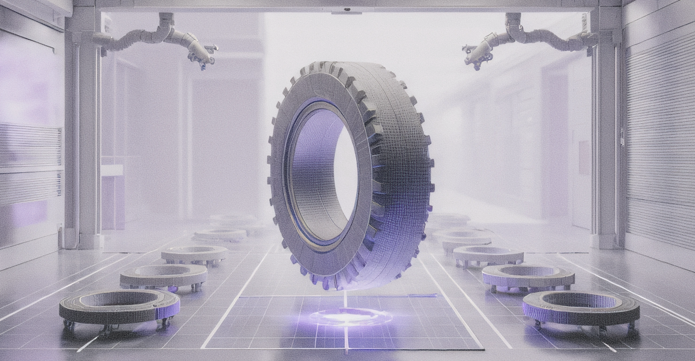
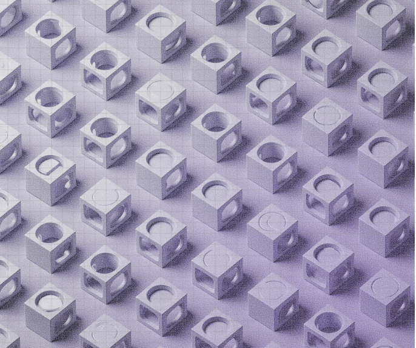
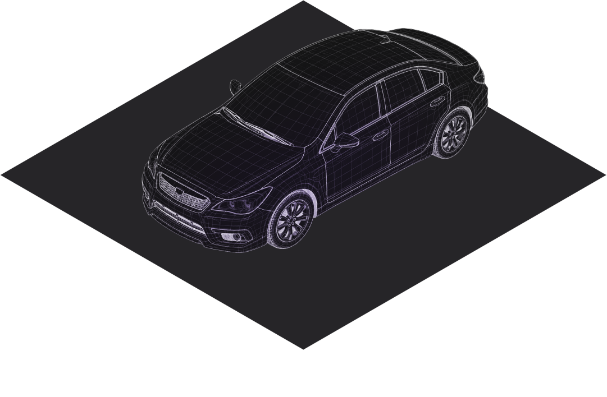
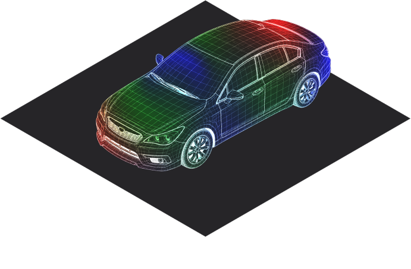
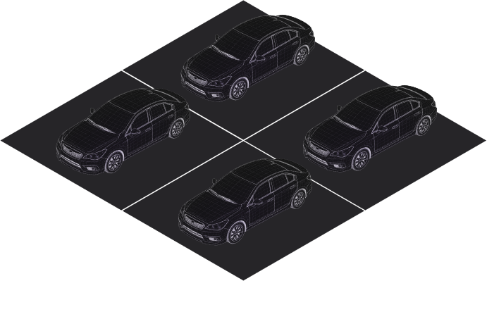
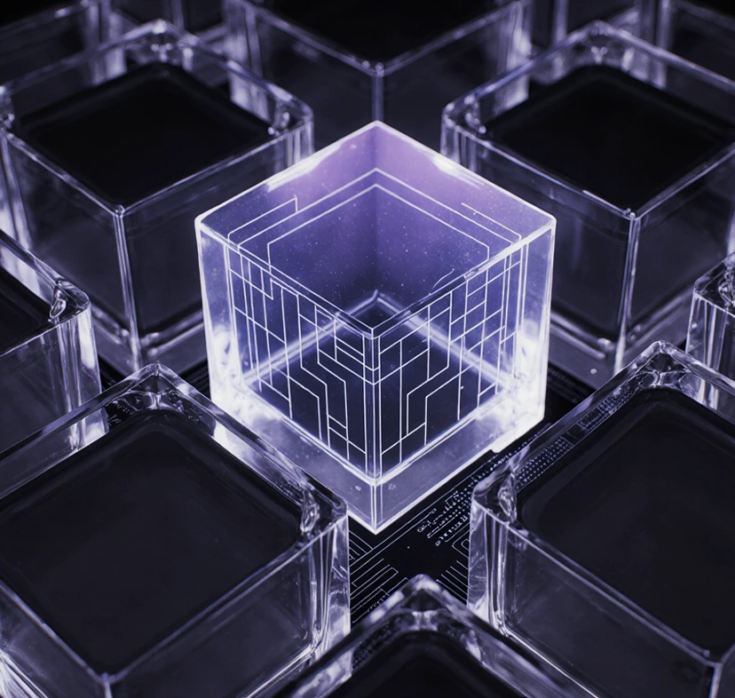

Generative Design
Engineering Design
and Evaluation
and Evaluation



意味のあるデザインを無制限に生成する

設計生成段階では、力学ベースの
ジェネレーティブデザインとデータ駆動型のディープラーニングの長所を組み合わせ、
工学的かつ審美的に意味のある大量のデザインを自動生成します。
特に工学設計のトポロジー最適化およびパラメトリックデザイン技術は、
ディープラーニングと有機的に結合することで相乗効果を発揮できます。



初期設計形状と基準モデルを設定します。


パラメトリックデザイン、トポロジー最適化、ディープラーニング技術を
組み合わせ、シードデータと合成データを生成します。
審美性と工学的な性能の両方を考慮したデータを生成します。
人工知能の学習には数千個のデータが必要です。
実際の現場で使用できる3Dデータは、せいぜい数十個。
ナニアラボ（NARNIA LABS）のジェネレーターは、少量のデータからでも
データ合成が可能です。
人が行うパラメトリゼーションでは多様なデザインを
表現しきれません。ジェネレーターがデータに基づいて抽出した
パラメータは、多様なデザインを表現でき、広いデザイン
領域を探索することが可能です。